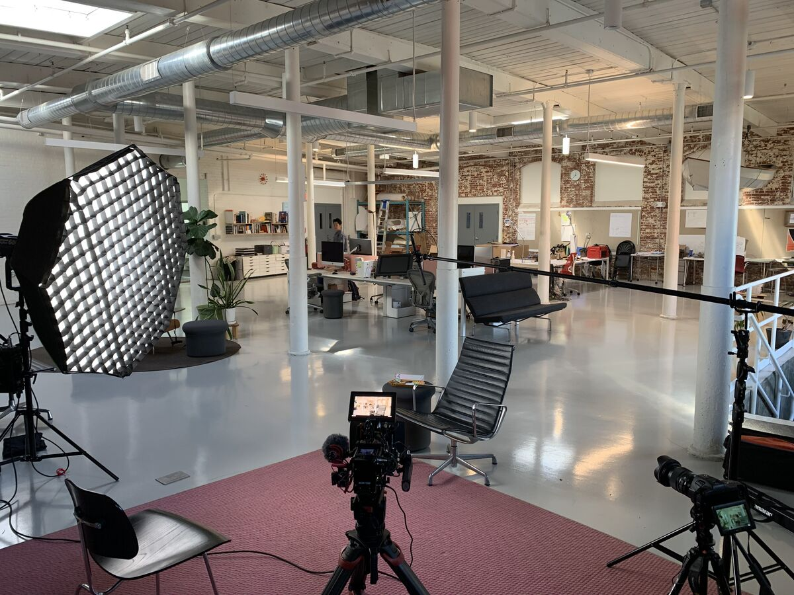
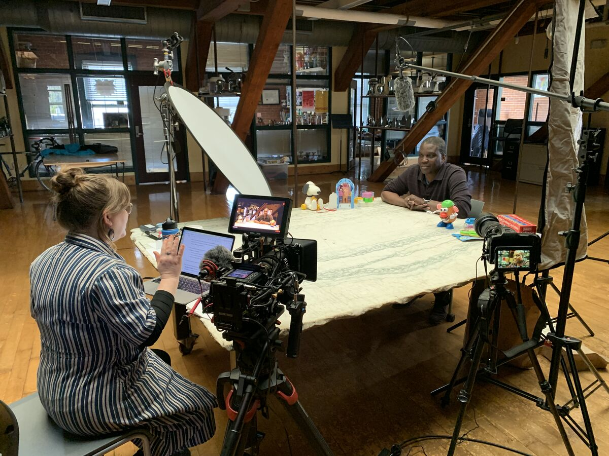
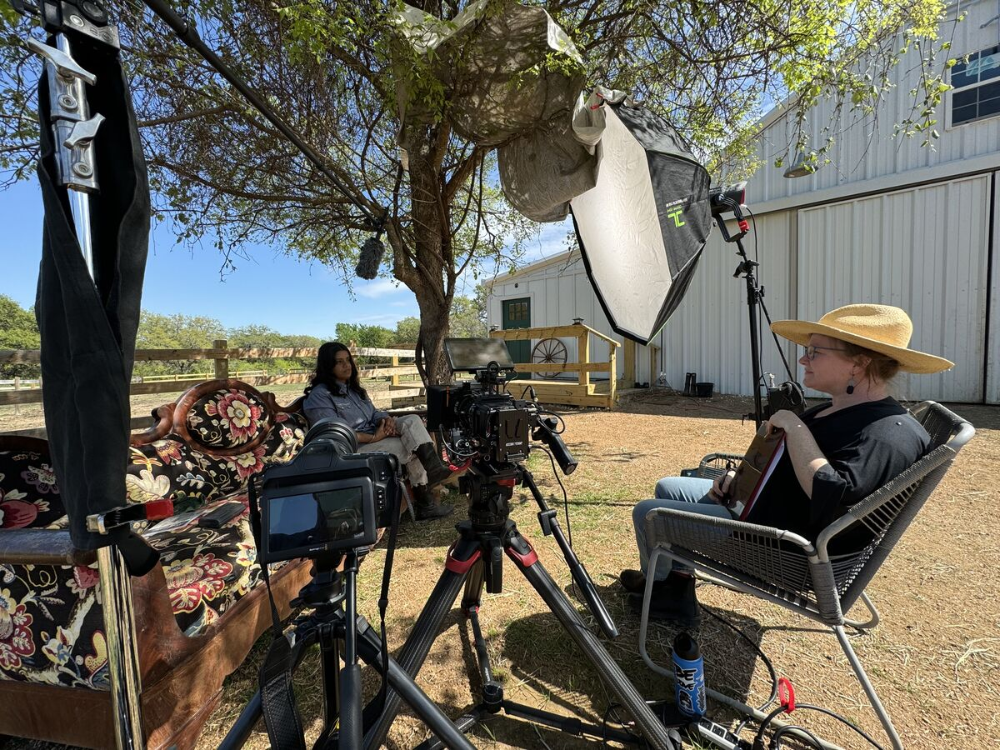
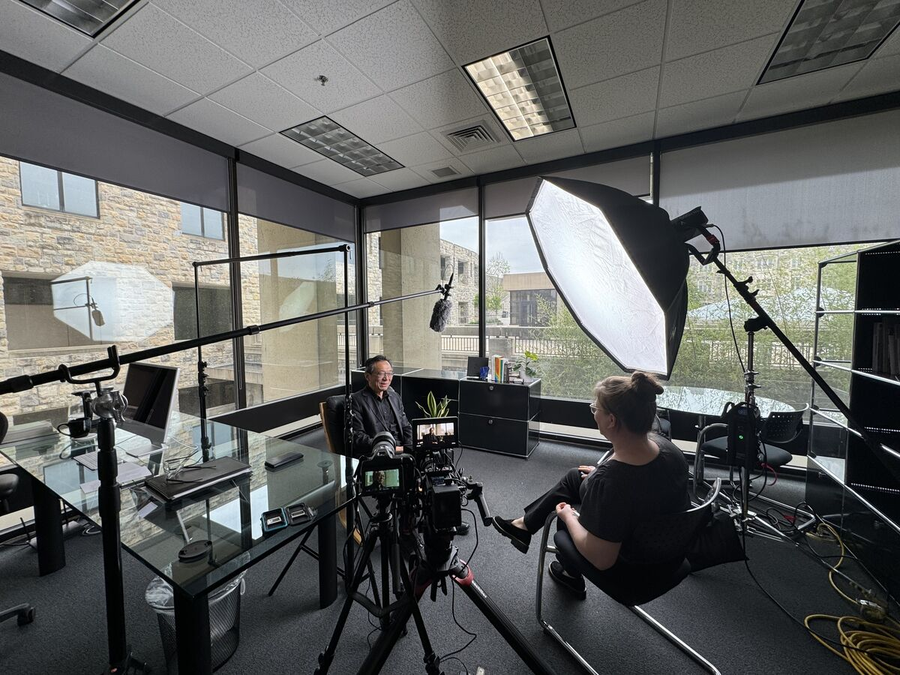

A Film by Such Nice People
The discipline that shaped modern consumer culture is having an identity crisis — and it's long overdue. re:purposed sits down with seven voices from across Industrial Design to ask what the field owes the world it helped build. What emerges is a candid look at a profession wrestling with its own contradictions: who gets a seat at the table, what happens when ego leaves the room, and whether the next century of making can undo the damage of the last. Equal parts confessional and manifesto, the film makes a case that the future of design is less about objects and more about the people they serve.




Co-Producer · Co-Director
Audrey is a transdisciplinarian working at the intersection of design, the arts, sciences, and business. She serves as Department Head of Graphic Design & Industrial Design and Professor of Industrial Design at NC State University. Her professional design experience spans industrial design for mass manufacturing, strategy consulting, filmmaking, and community-centered design research — with clients spanning from nonprofits to Fortune 500 companies. As co-founder of Such Nice People, her work focuses on provocative storytelling that promotes constructive dialog and action toward a more diverse, equitable, and inclusive world.
Co-Producer · Co-Director · Cinematographer · Editor
John is a visual storyteller working across photography, film, and branded content. He began his career in advertising at agencies in Raleigh and San Diego before transitioning to behind the camera, spending 15 years shooting commercial and editorial work in California — spanning lifestyle, sports, portraiture, and documentary — before returning to North Carolina. As co-founder of Such Nice People, re:purposed marks his feature directorial debut, pairing two decades of image-making experience with a deep curiosity about the people and processes behind the designed world.
Audrey and John have been friends since childhood, and in 2023 they created Such Nice People to document a sabbatical project exploring the state of Industrial Design. What started small and simple took on a life of its own and became re:purposed. At its core, Such Nice People is built on a shared belief in provocative storytelling — work that sparks dialog and action toward a more equitable world. The duo plans to continue making films that illuminate the overlooked corners of the design profession.
We're actively exploring ways to make re:purposed the first in an episodic series — each installment turning its lens on a different corner of the design world. If you're a sponsor, collaborator, or partner who believes in this kind of storytelling, we'd love to hear from you.
Get In Touch